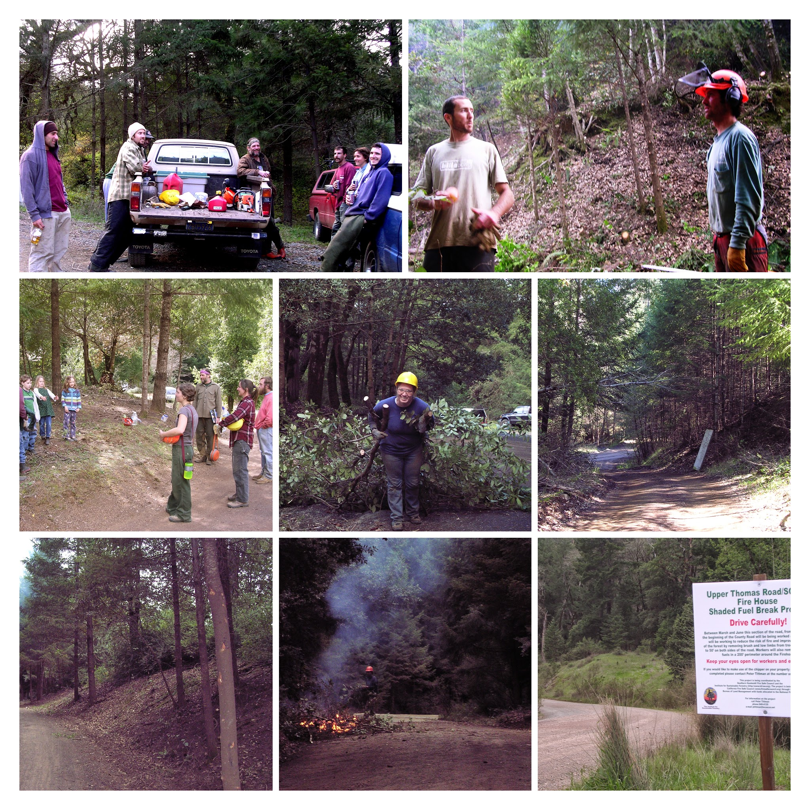

Forest products and bioenergy in California
The role for UC research and extension
Peter W. Tittmann, Ph.D.
Created: 2017-03-14 Tue 23:05
A little about me

Senior Analyst @ New Forests (2015–present)
- Rapid assessments of carbon offset and timber value
- Due diligence on property acquisitions
- Growth and yield modeling
- Financial model development
Academic Coordinator @ UC Biomass Utilization Group (2013-present)
- Biomass infrastructure map
- Life-cycle analysis of roundwood harvest
PostDoc @ UC Davis Energy Institute (2011-2013)
- Bioenergy systems modeling
- Hybrid poplar growth modeling
Forest Products in California: Key issues
- Efficiency and innovation
- Renewable energy
- Carbon cycle of wood products
- Public education
Efficiency and innovation
- Infrastructure
- Products
- Supply chains
- Livelihood
Utilization of biomass from tree mortality
Collaborators: Carmen Tubbesing (Ph.D. Candidate ESPM), Eng. Jose Lara (Ph.D. Student Energy and Resources)
Funded by: California Energy Commission
- Translate Aerial Detection Survey mortality to biomass volume @30m statewide
- Model harvest and transport costs
- Evaluate substation-level grid capacity for small scale (<3MW) biomass power.
Mapping Mortality

Spatial Clustering

Modeling harvest operations cost
Yarding distance
Slope

Cluster-level supply curve

Biomass and forest products infrastructure database
Redwood Properties: NZ vs CA
Calculate Modulus of Elasticity (MOE) and modulus of Rupture (MOR) for redwood samples from New Zealand and California
Redwood Results
- No significant differences between NZ and CA
- Regional differences suggest local variables drive wood property differences
California forest products industry
| State | Rough lumber (%) | Surfaced lumber (%) | Total Output (MMBF) | Percent of Region |
|---|---|---|---|---|
| CA | 34 | 65 | 1937 | 0.15 |
| ID | 3 | 97 | 1647 | 0.12 |
| MT | 4 | 96 | 562 | 0.04 |
| OR | 5 | 95 | 5119 | 0.39 |
| WA | 4 | 96 | 3942 | 0.30 |
Source: 1. Western Wood Products Association. 2013 Statistical Yearbook of the Western Wood Products Association. Portland: Western Wood Products Association, 2013.
Product Opportunities
- Cross-laminated timber
- Oriented Strand Board
- Hardwoods – engineered flooring, construction mats, dra
- Small-CHP + wood processing
Renewable Energy
- Fuels
- Biomass power
- Heating and cooling
Carbon Cycle of Wood Products
- Integrated industrial/forest ecology
- Lack of data
- Need for science based leadership
Public Education
- Raising public awareness/interest in forests as places of both recreation/wilderness and livelihood, material production
Smurfs ?!
Research questions
- What forest product utilization strategies minimize climate pollution and public health impacts?
- What strategies align with the range of public values for forests?
- What innovations in the forest product sector improve our ability to efficiently and sustainably manage forests?
- What are effective strategies for public education around sustainable forest products?
Funding and collaboration
Extension Priorities
- Develop a robust applied research platform with strong collaboration between UC, CA and non-CA groups in collaboration with county Advisers
- Engage actively in public discourse relevant to forest products, climate change, and forest sustainability
- Social media
- Workshops/fora
- Policy initiatives
- Provide comment on agency initiatives
- Provide technical assistance to forest products and bioenergy sector
- Close collaboration with county advisors
- Align research with barrier issues identified through outreach
- Provide review and guidance on proposal